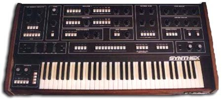

Scheda 020 · 1982 · Castelfidardo (AN), Italia
Elka Synthex
Il synth italiano che sfidò Prophet e Oberheim, e finì tra le mani di Jarre e Stevie Wonder
Nato da un progettista indipendente, diventò il polifonico analogico più ambizioso mai costruito in Italia.
- ANNO
- 1982
- COSTRUTTORE
- Elka (Castelfidardo)
- SINTESI
- Sottrattiva, oscillatori DCO
- VOCI
- 8 voci polifoniche
La macchinaChe cos'è
Progettato in proprio dall'ingegnere Mario Maggi e prodotto dall'italiana Elka dal 1982, il Synthex è un polifonico analogico a 8 voci con 16 oscillatori DCO controllati digitalmente: a differenza dei rivali americani restava perfettamente accordato. Filtro CEM a 4 poli multimodo, joystick al posto delle rotelle, sequencer interno a 4 tracce da 128 passi — tra i primi sequencer multitimbrici della storia. Costava meno del Prophet-5 ma offriva più voci: fu considerato il vertice dell'industria italiana dei sintetizzatori. Ne furono costruiti circa 1.850 in tre serie.
Chi l'ha costruitaMario Maggi
Mario Maggi lavorava da anni per conto proprio quando, dopo i rifiuti di Galanti/GEM, EKO e della stessa Crumar, portò il prototipo alla Elka di Castelfidardo tramite un amico che doveva riparare un organo in fabbrica: direzione e consiglio ne rimasero folgorati. Il nome nacque dopo notti insonni: Maggi voleva un nome corto che finisse in X, tra le suggestioni dei fumetti di Tex Willer. Il Synthex debuttò al Musikmesse di Francoforte nel 1982: i distributori aspettavano di ascoltarlo ancora prima che Maggi arrivasse in albergo.
Come funzionaCosa c'è dentro
Ogni voce ha due oscillatori digitali (DCO): 16 in tutto, generati con circuiti TTL invece che con i soliti VCO analogici, quindi restano intonati senza bisogno di accordarli di continuo. Il segnale passa in un filtro Curtis a 4 poli commutabile fra passa-basso 24dB, passa-alto e due modalità passa-banda. Il joystick sostituisce le rotelle pitch/mod e in modalità split controlla in tempo reale due LFO indipendenti. Il sequencer integrato registra 4 tracce fino a 128 passi ciascuna, con lunghezze diverse per creare poliritmi che si intrecciano ad ogni giro.
Chi l'ha usataNei dischi
- Jean-Michel JarreSynthex e laser harp protagonisti dell'album «Rendez-Vous», 1986
- Stevie Wonderl'ultimo Synthex mai assemblato fu montato apposta per lui: il basso di «Skeletons», 1987
- Keith Emersonlo usò dal vivo per «Fanfare for the Common Man» quando il suo Yamaha GX-1 lo tradì
- Nick Rhodes (Duran Duran)apprezzava i suoi campanelli morbidi, presenti in più album della band
Da ascoltare
Jean-Michel Jarre, «Second Rendez-Vous» (1986)
Synthex e laser harp sono i protagonisti sonori del brano, eseguito anche dal vivo a Houston nello stesso anno.
L'aneddotoUna storia
Prima di dire sì, Elka era stata la terza scelta di Maggi: Galanti/GEM e la stessa Crumar (fondata da un ex socio Elka) lo avevano già respinto. L'ultimo Synthex mai assemblato uscì dalla fabbrica pochi mesi prima della chiusura, costruito su misura per Stevie Wonder: è quello strumento a fornire il suono di basso di «Skeletons», singolo del 1987 dall'album «Characters». Un altro esemplare accompagnò Keith Emerson sul palco quando il suo enorme Yamaha GX-1 lo tradì durante l'esecuzione live di «Fanfare for the Common Man».
Avvertenze
Il joystick non sta a fianco della tastiera, come le rotelle pitch/mod: vive in mezzo al pannello di programmazione, tra i comandi.
Il carosello
Le 6 tavole
Da dove viene
Fonti
- «Elka Synthex» — Sound on Sound (Retrozone) verificata il 2026-09-04
- «Dedicated to Mario Maggi (third part)» — Classic2Vintage verificata il 2026-09-04
- «ELKA Synthex — analog Classic and vintage Workstation» — GreatSynthesizers verificata il 2026-09-04
- «Elka Synthex» — Wikipedia (EN) verificata il 2026-09-04
Foto: Matt Friedman · CC BY 3.0 · Wikimedia Commons (originariamente pubblicata su vintagesynth.com)